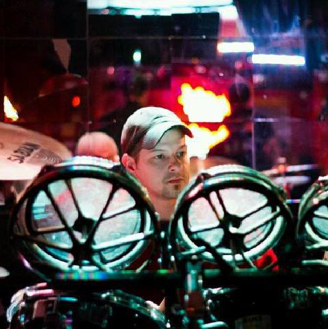

About Me
Hello all! Here is a little bit about myself. I grew up in a small town called Leroy Township in Northeast Ohio. I went to High School at Riverside High in Painesville. Some of my hobbies include beer and wine making,gardening,woodworking,fishing,target shooting and making ammunition. I also have been playing the drums since I was in 5th grade. I can't beleive that was over 20 years ago! About nine years ago some friends and I started a band called Midnight Buford. We write all of our own music and have formed our own genre called 'Junk Rock'. We all enjoy playing together still to this day.
Some of my work history includes resturant management,assembly and testing work,and medical research. For the last 10 years I worked in research studying Ulcerative Colitis and Crohn's Disease at Case Western Reserve University. I have two publicatons. One is in PlosOne Science and the other is in The Journal of Immunology. I am currenty studying coding and web development at Case Western Reserve University. After a decade I feel it is time to learn some new skills and change careers.
Connect with Me